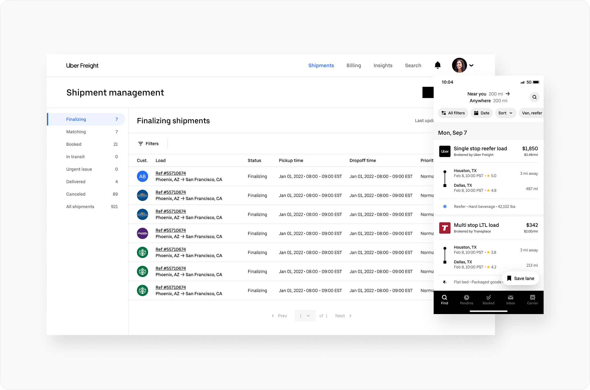
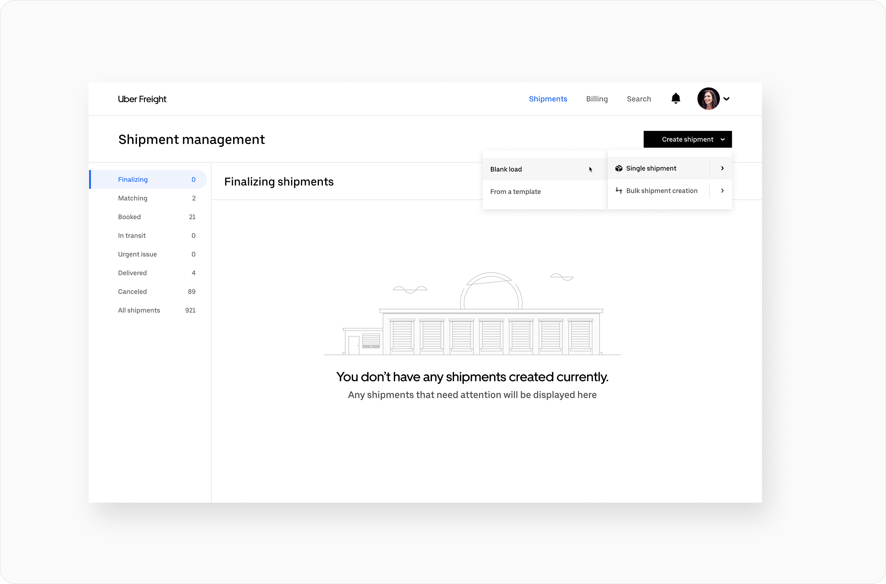
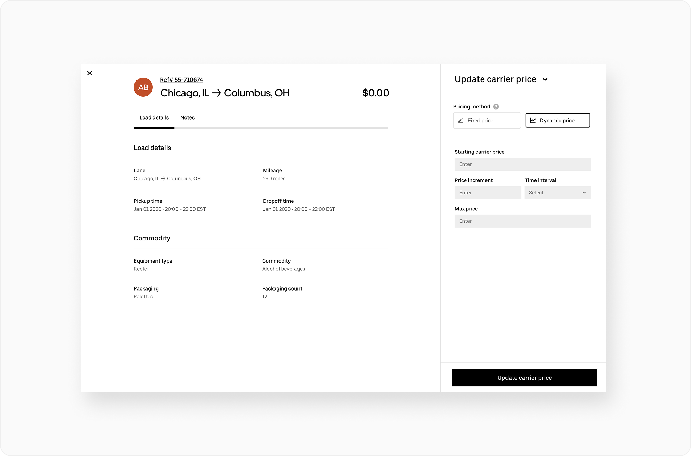
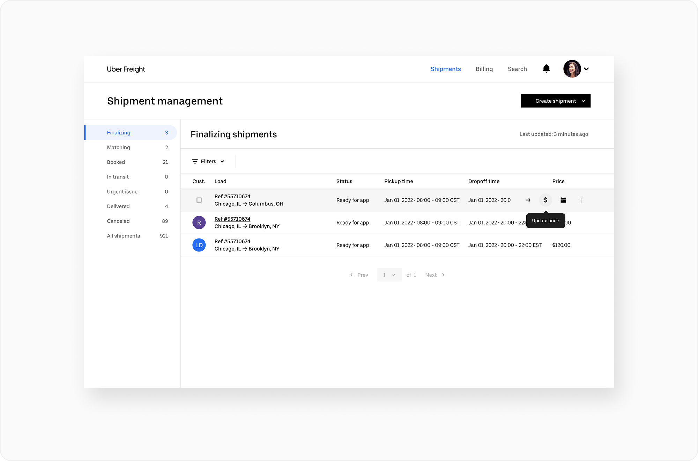
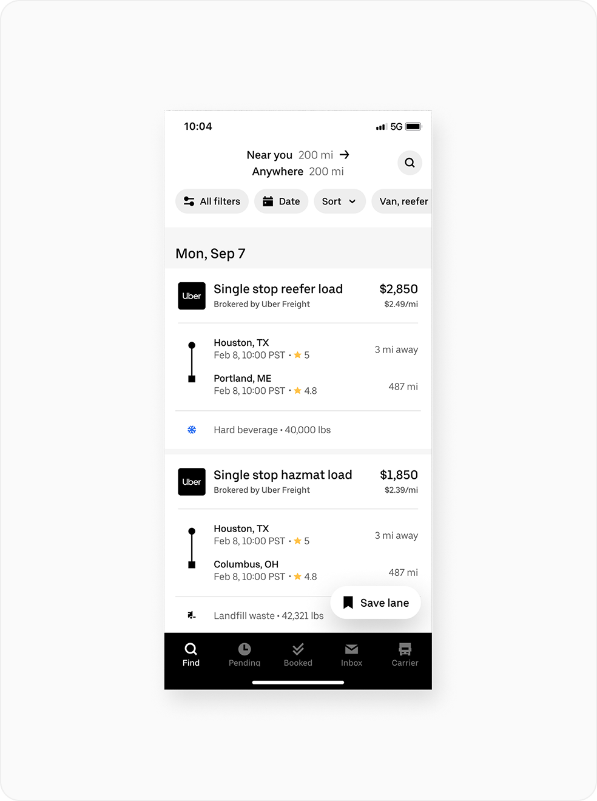
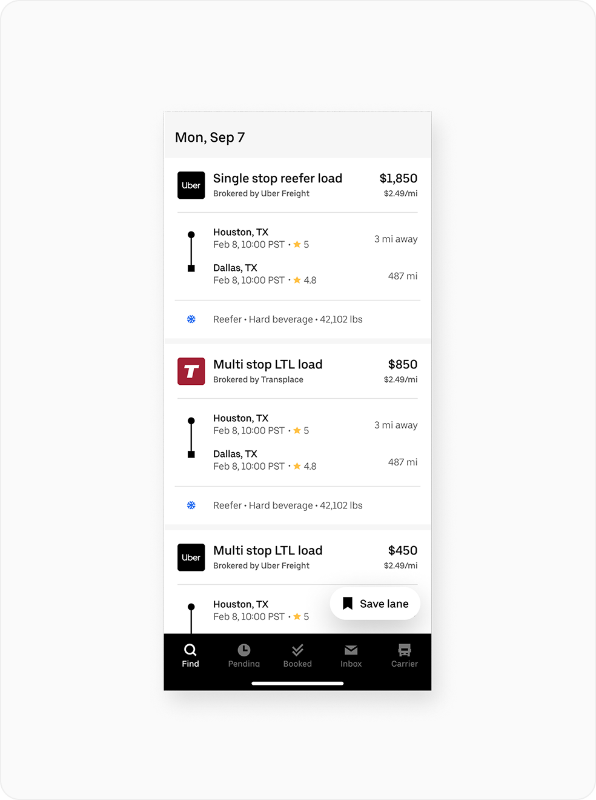
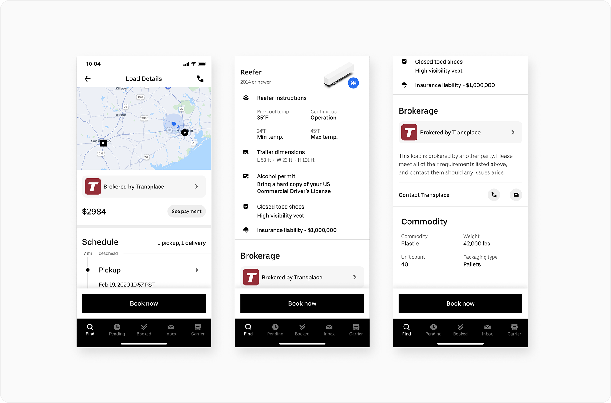
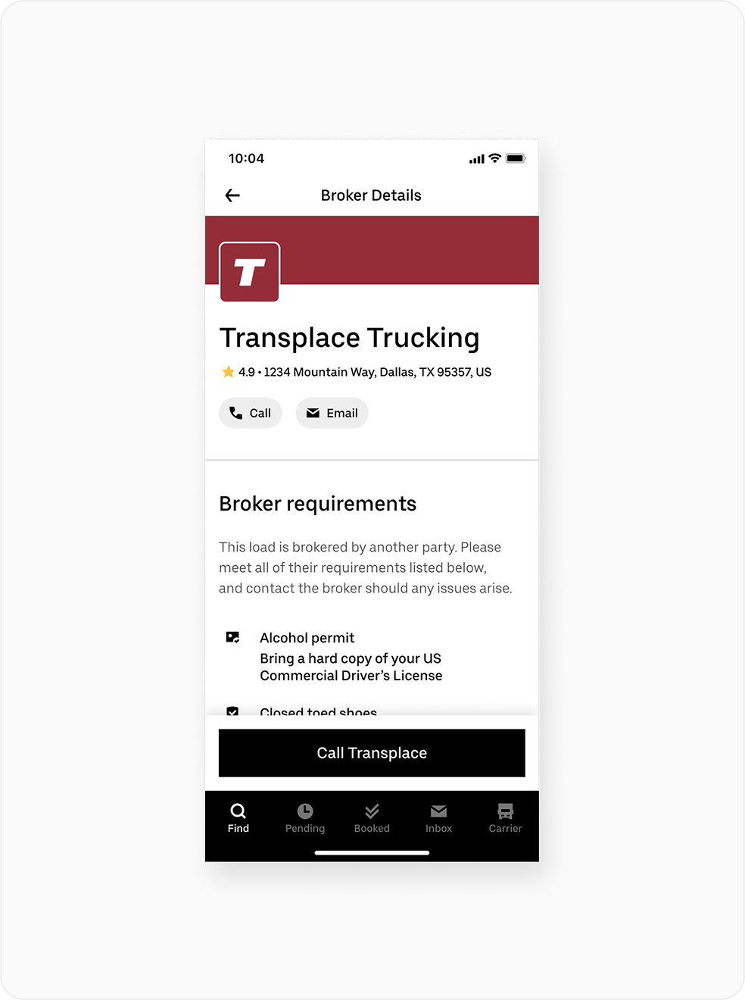
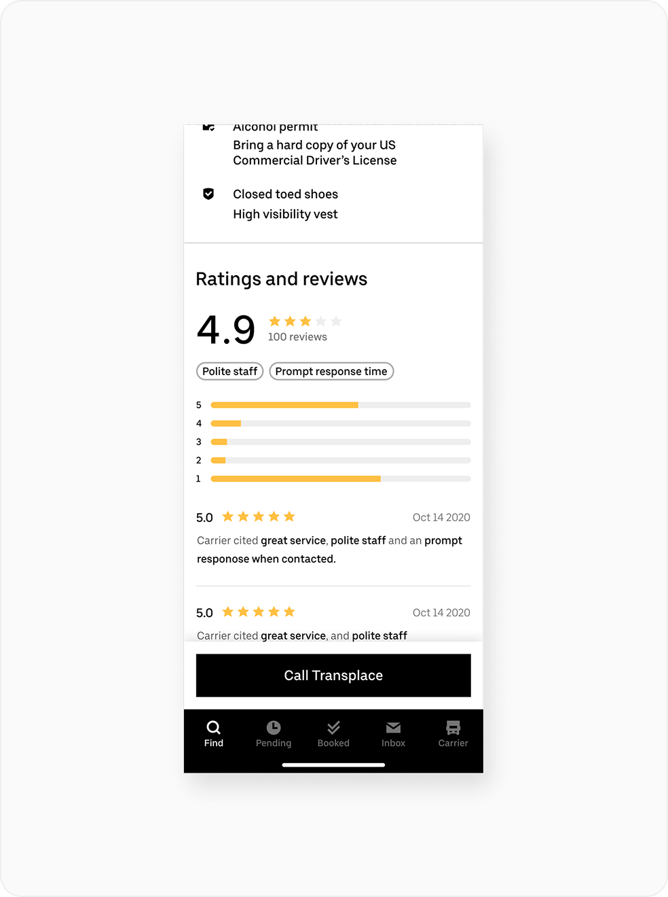

A 0→1 multi-broker freight marketplace for Uber Freight — and why we killed it pre-launch
Working with the Uber Freight team, I led a 0→1 project to build a first-of-its-kind multi-broker marketplace — a platform where drivers and brokers could book and manage loads in one place. No other company had built a public marketplace of this kind. We designed a mobile experience optimized for booking on the go, paired with a more robust desktop experience for creating and managing loads at scale.
The project never made it to launch. Weeks before release, a competitor beat us to market — and the industry's leading pricing data provider, wary of the public brokerage model, pulled their data contracts in response. Facing the same business risk, we made the difficult decision to sunset the project before it cost us our own access to critical pricing data.

The freight industry was overdue for a modern product experience. Drawing from the evolution of consumer-facing design, we set out to bring that same clarity and intuitiveness to a space that had long been underserved. Uber Freight's muted branding was used intentionally — creating a neutral canvas that let partner brokerages shine and gave the marketplace the feel of a trusted, multi-brand platform.
The desktop experience was built around speed and efficiency. Whether users were creating loads from scratch or building templates to streamline repeat work, the flow was designed to be fast and frictionless. Pricing, servicing, and bulk load management were treated as first-class interactions — powerful without ever feeling complex.



The desktop experience centered on load creation, giving brokers the tools to post and manage freight. The mobile app was scoped exclusively for drivers — a focused booking experience that surfaced available loads while making the originating brokerage visible at every step. Because our platform aggregated loads from multiple brokerages, drivers needed to understand they were accepting work from third parties, not directly from Uber Freight.
To reinforce that transparency, we introduced brokerage profile pages and a ratings system. Each brokerage had a branded presence on the platform — their own identity, not a generic listing — so drivers could evaluate who they were booking with before committing. Drivers could leave reviews after completing a job, creating accountability and giving brokerages an incentive to build reputation across the platform.




